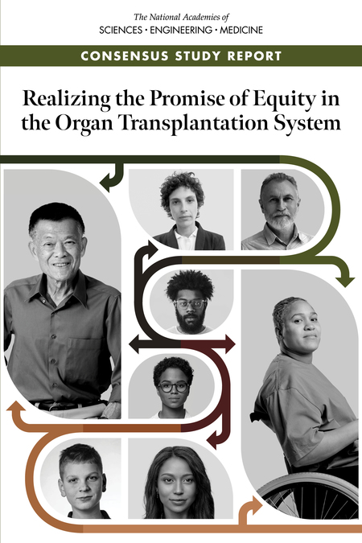
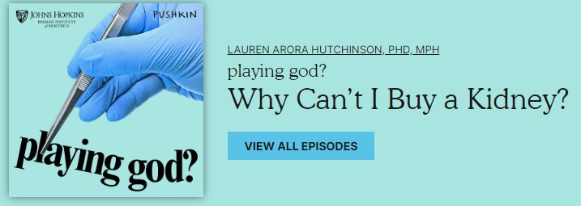
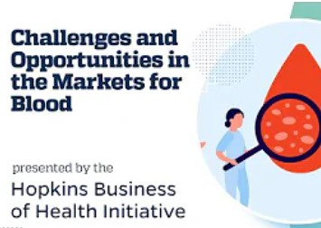
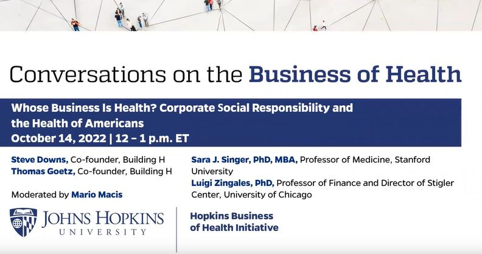
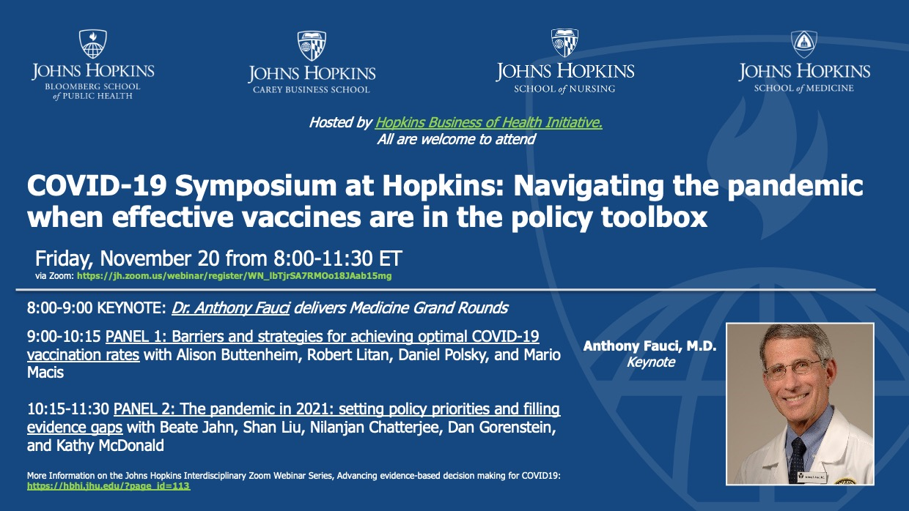
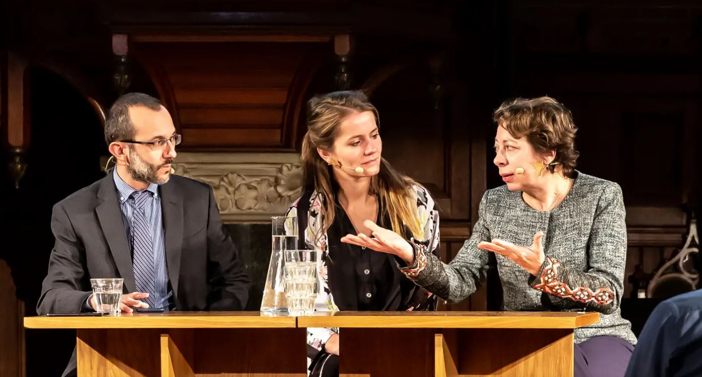
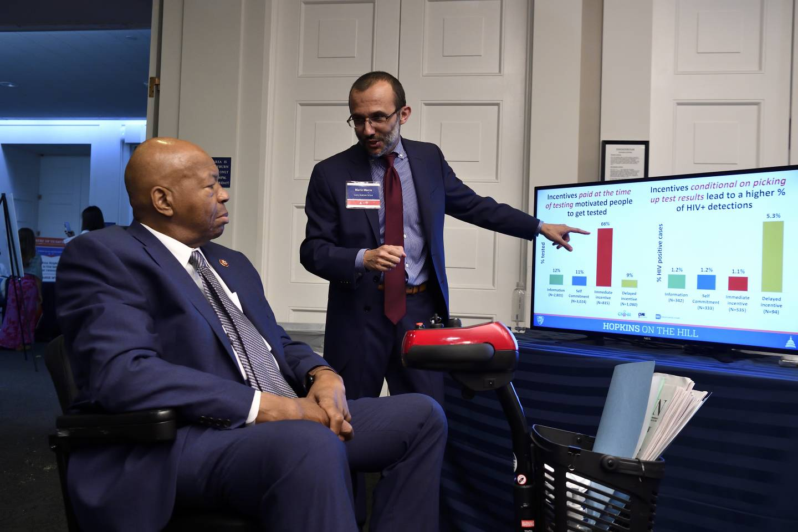

Mario Macis
Professor of Economics and Management, Johns Hopkins Carey Business School
Core Faculty and Leadership Team, Hopkins Business of Health Initiative
Affiliate Faculty, Johns Hopkins Berman Institute of Bioethics
Research Associate, National Bureau of Economic Research (NBER)
Research Fellow, Institute of Labor Economics (IZA)
Associate Researcher, Center for Economic Research North-South (CRENoS)
My particular focus is on understanding the factors that influence people's support for markets and market-based solutions to social problems.
My work contributes to the fields of health, labor, development, and managerial economics. Although my research primarily focuses on economics, much of my work is interdisciplinary. I published in leading academic journals, including the American Economic Review, the American Economic Journal: Applied Economics, the American Economic Journal: Economic Policy, the Journal of Labor Economics, the Journal of Health Economics, the Journal of Development Economics, Management Science, Sociological Science, and Science.
I conducted field- and survey-based experimental studies to examine the effect of economic incentives on blood donation, attitudes about providing compensation to organ donors, and people's reactions to price surges and price controls. I also studied the determinants of Americans' trust in the health care system, the effects of firms' exporting on workers’ wages, the impact of female CEOs on gender wage inequality, the effect of unemployment benefits on job reallocation, the adoption of efficient management practices in health care, and the effects of incentivized peer referrals to improve the detection of infectious diseases.
** Research on the COVID-19 pandemic response **: I co-authored studies on expectations about the duration of lockdowns and people’s compliance, people’s reactions to price surges of essential goods, and the effect of social networks on the adoption of preventative behaviors, and compliance with social distancing measures . I also co-organized inter-disciplinary webinars and a joint JHU-LSE online conference on behavioral economics and covid-19 to foster conversations and exchanges of ideas and contribute to informing policymakers.**
I teach courses in microeconomics , behavioral economics, strategic human capital, health economics, and applied behavioral strategy for organizational and societal impact.
I have been a consultant for the World Bank, the International Labor Organization, the National Marrow Donor Program, and the United Nations Development Program.
I recently served on a National Academies of Sciences, Engineering and Medicine committee on A Fairier and More Equitable, Cost-Effective, and Transparent System of Donor Organ Procurement, Allocation, and Distribution. The committee released a report, available here. I also contributed to a United Nations report on the social and economic impact of the Zika virus.
Occasionally, I write Op-eds for La Nuova Sardegna and policy pieces for La Voce (in Italian).
Before joining Hopkins, I was a faculty member at the University of Michigan, Ross School of Business. I received my PhD in Economics from the University of Chicago, Department of Economics.
Recent Research
Expectations, reference points, and compliance with COVID-19 social-distancing measures . (with Guglielmo Briscese, Nicola Lacetera and Mirco Tonin). Journal of Behavioral and Experimental Economics, January 2023.
Incentivized peer referrals for tuberculosis screening: evidence from India. (with Jessica Goldberg and Pradeep Chintagunta). American Economic Journal: Applied Economics, January 2023.
Management, Supervision, and Health Care: a Field Experiment (with Felipe Dunsch, David Evans and Ezinne Eze-Ajoku). Journal of Economics and Management Strategy , February 2022.
Paying for Kidneys? A Randomized Survey and Choice Experiment (with Julio Elias and Nicola Lacetera). American Economic Review, August 2019.
Increasing Blood and Plasma Donations: Behavioral and Ethical Scalability (with Nicola Lacetera). Book chapter, in Behavioral Science in the Wild, edited by Nina Mazar and Dilip Soman (University of Toronto Press, May 2022).
Other updates
National Academies of Science, Engineering and Medicine report on Realizing the Promise of Equity in the Organ Transplantation System. February 2022.

Playing God? Podcast Why Can't I Buy a Kidney?, October 31, 2023

HBHI Webinar on Blood Matters: Challenges and Opportunities in the Market for Blood and Blood Components, June 2, 2023

HBHI Webinar on Whose business is health? Corporate social responsibility and the health of Americans, October 14, 2022

JHU-LSE conference on Experimental Insights from Behavioral Economics on Covid-19. February 12 and 19, 2021

1% Steps for Health Care Reform: Removing all financial disincentives to living kidney donation

COVID-19 Symposium at Hopkins: Navigating the Pandemic when effective vaccine is in the toolbox, November 20, 2020

Lecture and debate: Euros for your organs?, Erasmus University, the Royal Netherlands Economics Association and Arminius Rotterdam, February 14, 2019

Hopkins on the Hill event highlights 21 projects that received funding from 16 different government agencies, Rayburn House Office Building, Washington DC, June 12, 2019

At the United Nations headquarters, for the presentation of the report: Socio-Economic Costs of the Zika Virus, April 6, 2017